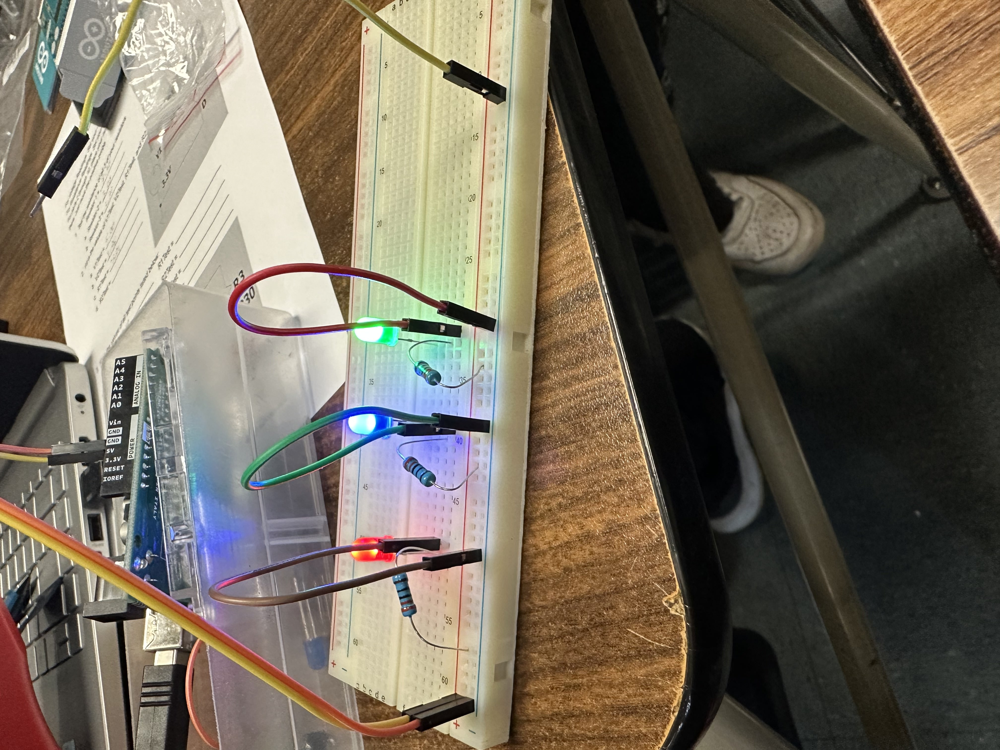

Hello World!
Noahs Website
Engineering Journal
9/2/22- We learned how to tinkercad. We had a competion with tinkercad and I made a stove. I came im 3rd
9/9/22- We designed our first tinkercad for our rube goldberg machine, we made a domino hit a car then pop a balloon
9/16/22- We had a competion with paper boats and we had the max time9/23/22- We finished our rube goldberg and it works good, we popped the balloon on our 5th try or around there
10/7/22- We made animal prosthetics on tinkercad and made pb&j sandwiches
10/13/22- We made paper air planes, went to the top floor of the 1000, and tried to hit a bucket
10/31/22- We learned how to use circuitry on Tinkercad, and we made alot of different circuits and expiremented with the voltage

11/10/22- We learned how to use circuits hands on, and we made LEDs light up. We also expiramented with the voltage
11/14/22- We learned how to code with arduinos
11/28/22- We got told that our final was going to be a bridge, 2 ft long made of 20 spaghettis, we then tinkercaded it
11/5/22- We made a bridge that was just a straight line, it worked for a little, then broke
11/13/22- We made oour final bridge and its very nice, it even has suspension